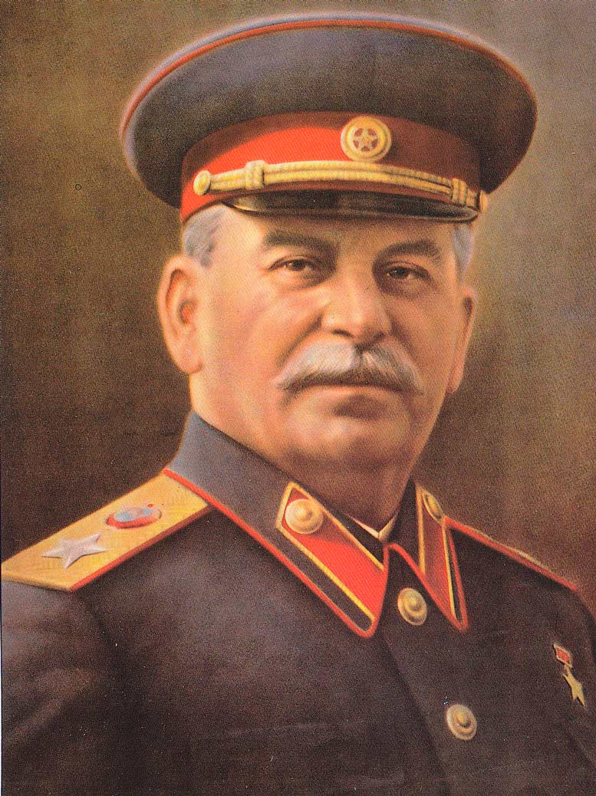

ЛЕНИНГРАДСКОЕ ОТДЕЛЕНИЕ ФОНДА РАБОЧЕЙ АКАДЕМИИ
ЛЕНИНГРАДСКАЯ ОРГАНИЗАЦИЯ РАБОЧЕЙ ПАРТИИ РОССИИ
ПУШКИНСКИЙ РАЙКОМ РКРП, РКСМ(Б) И РОТФРОНТА ЛЕНИНГРАДА
КРАСНЫЙ УНИВЕРСИТЕТ
РЕКОМЕНДАЦИИ
научно-практической конференции
«И.В. СТАЛИН — РУКОВОДИТЕЛЬ ГОСУДАРСТВА
ДИКТАТУРЫ ПРОЛЕТАРИАТА»

Ученые, представители средств массовой информации, общественных организаций, политических партий и другие участники конференции, обсудившие всестороннюю деятельность выдающегося руководителя первого в мире социалистического государства И.В.Сталина, поставленного во главе государства диктатуры пролетариата рабочим классом, пришли к единодушным выводам, что:
1. И.В.Сталин сумел укрепить коммунистическую партию, организовать эффективную социалистическую плановую экономику в интересах всех трудящихся и построить на её основе первое в мире социалистическое государство.
2. Под руководством Сталина были завершены завещанные В.И.Лениным коллективизация сельского хозяйства, индустриализация и электрификация народного хозяйства, ликвидация неграмотности и культурная революция, организованы передовые научные и технические институты, театральные, художественные, литературные и кинематографические учреждения. Это послужило основой для выдающихся успехов советской науки, техники, культуры и искусства.
3. И.В.Сталин обеспечил подготовку страны к войне с фашизмом и возглавил победу в ней. Организовал создание ядерного щита и восстановление разрушенного войной народного хозяйства в кратчайшие сроки.
4. Гибель на войне лучших сил рабочего класса и партии стала предпосылкой того, что после смерти Сталина ревизионистское руководство во главе с Хрущёвым по сути свернуло с пути построения полного коммунизма при помощи пролетарского государства, на путь «общенародного государства» и постепенного введения рыночных механизмов в экономике. Это стало началом буржуазного перерождения в советском обществе, приведшего в дальнейшем к реставрации капитализма.
5. Советские люди, и прежде всего — коммунисты, извлекли уроки из поражения и готовы к борьбе за интересы и цели рабочего класса, всего трудового народа. Знамя Ленина и его ученика Сталина, продолжателя лучших революционных традиций рабочего класса России, осеняет их в этой борьбе.
Исследовав богатое научно-практическое наследие И.В. Сталина, конференция рекомендует трудящимся России:
1. Изучать практику борьбы и теоретические работы И.В. Сталина как марксиста-ленинца.
2. Отстаивать и пропагандировать имя и дело И.В.Сталина и защищать их от нападок буржуазных идеологов и мещан.
3. Учиться у И.В.Сталина последовательности и стойкости в борьбе за интересы рабочего класса и всех трудящихся.
Ленинград – Пушкин
20 декабря 2014 года
|